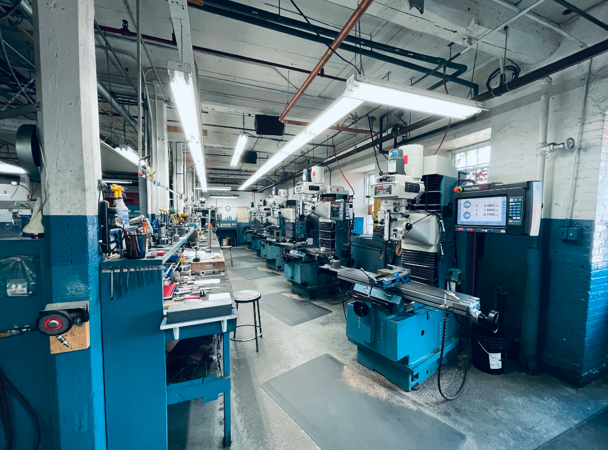
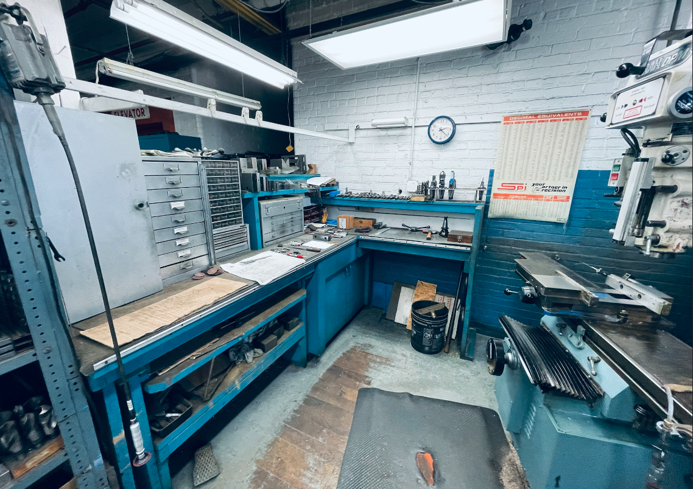
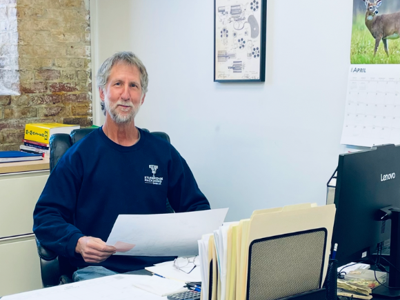
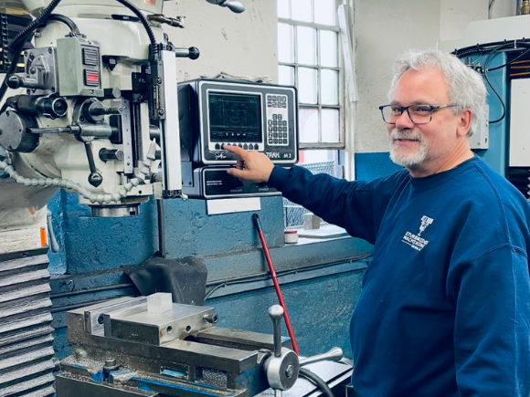
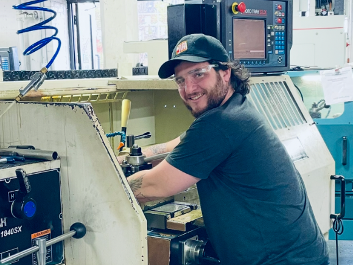
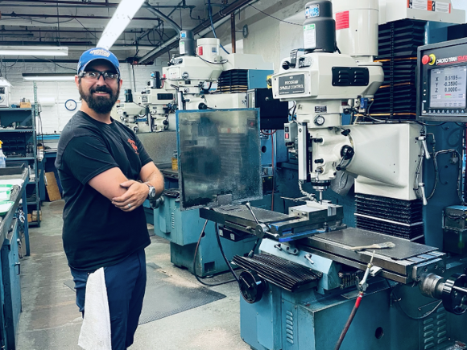
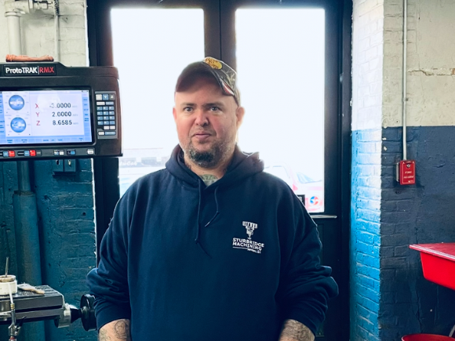

Built on Steel.
Driven by Precision.


Sturbridge Machining Services LLC is a full-service precision machine shop based in Sturbridge, Massachusetts. Founded on the belief that craftsmanship and advanced manufacturing aren't mutually exclusive, we've spent over 15 years delivering exceptional results to customers who demand the best.
From prototype to production run, we work closely with engineers, procurement teams, and project managers to ensure every part meets exact specifications — on time and within budget. We specialize in complex, tight-tolerance components where failure is not an option.
Our facility operates around the clock with a team of seasoned machinists and quality control specialists dedicated to first-article inspection, in-process checks, and final certification on every job we ship.
Materials We Machine
Aluminum alloys, stainless steel, titanium, Inconel, brass, copper, hardened tool steels, engineering plastics, and exotic alloys — we have the tooling and experience to cut it all cleanly and precisely.
Industries Served
Defense & government contractors, aerospace & aviation, medical device manufacturing, automotive motorsport, heavy industrial, hydraulics & fluid power, and custom OEM components.




